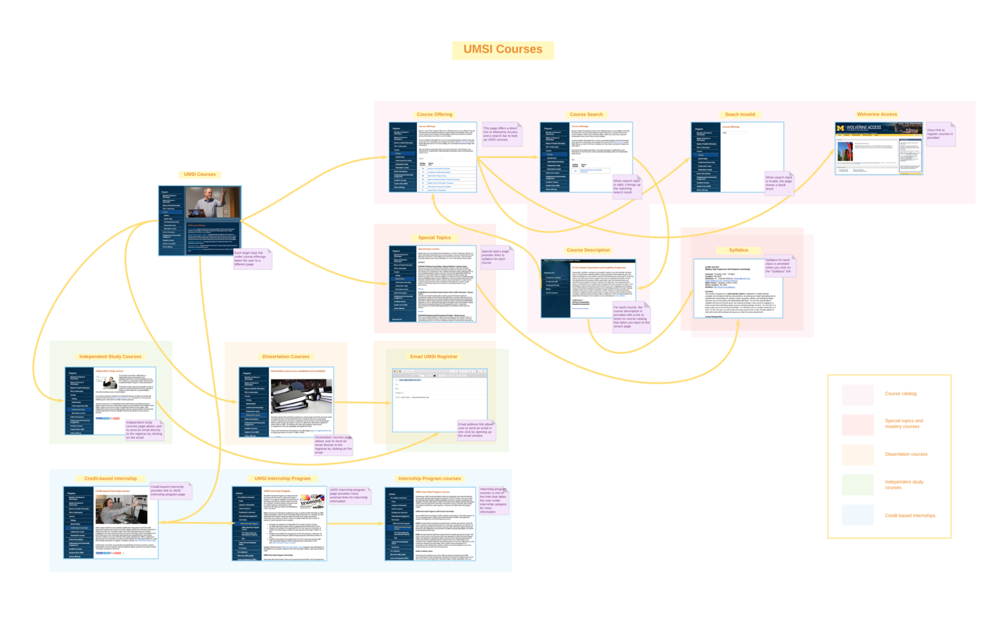
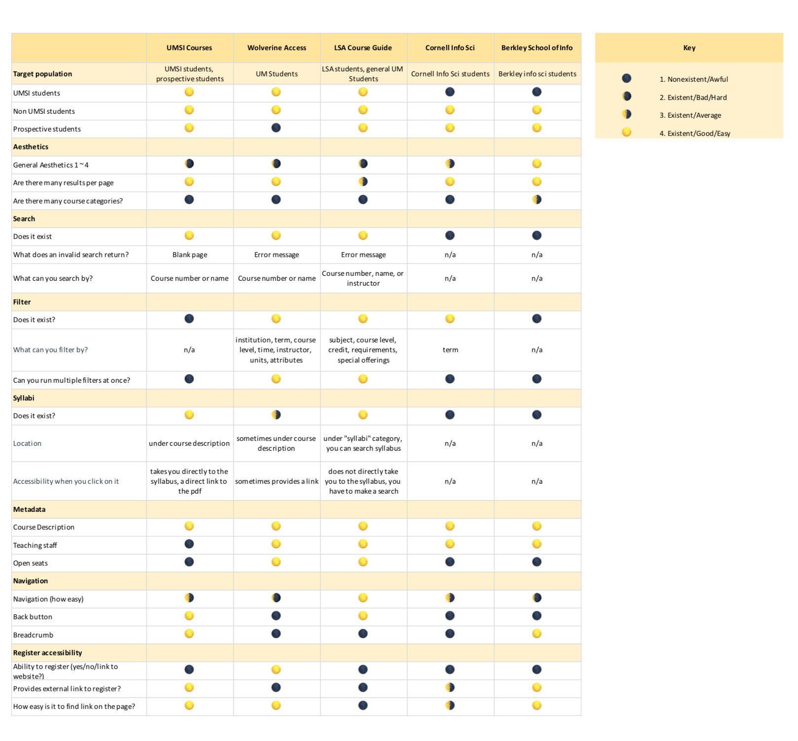

UMSI Courses
UX Research and Usability Testing
The Problem
Class registration is one of the most frustrating tasks for students. Focusing on the School of Information courses, we explored the UMSI Courses website to analyze the efficiency of its design and functionality. We identified three main problems below.
Functionality
Does the lack of additional search and filter features, such as searching by credit hours, UMSI path requirements, meeting day/times, and course levels cause user frustration when looking for a specific class?
Metadata
Course guide lacks supporting information about faculty information, open and closed seats and enrollment status, location, meeting time, class number, Course Profile link (ART), and syllabus.
Accessibility
The search function lacks a button and shows a blank page with no back button for an invalid search. It has navigation problems and poor organization that frustrates the users.
Research Questions
1. Does UMSI Courses meet the standards of students browsing the site?
2. What are the features that students need to find their courses?
3. What kind of information should be provided under course description?
Interviews
We began by interviewing a variety of people from various backgrounds. In order to acquire various results, we decided that various backgrounds would provide a strong variety in perspectives. Take, for instance, MM and AS who are each not in LSA and have different tools to serve the purpose of course guide. With this in mind, we each came up with a short list of potential participants who would be willing to cooperate and narrowed it down such that our list of participants is diverse. After identifying the type of people we wanted to interview, the process of getting them to agree was fairly simple. Since our product’s major target audience is UMich Students and the target audience for competitor products is often students of their respective institution, we decided to primarily interview peer students of various backgrounds.
Participants
Analysis
Once the interviews were complete, we examined each interview and coded them for further analysis. We pulled the keywords and phrases that stood out to us. We had more than one person do this process, so the words that stood out differed to each person. We had to go through the process of unifying what keywords and phrases were important and unimportant. The keywords and phrases were significant enough for us to categorize them. The themes we came up with are user frustration, requirements, improvements, and functionalities.
We pulled out the content first and the separated them into similar categories before we named them. This helped us eliminate the unnecessary topics for coding the interviews. During this process, we kept in mind what we could write for the personas. The analysis helped us identify the goals of each student in a more standardized way. After the coding, it was easier for us to profile each person’s motivation and preferences. Keeping their background in mind helped us understand their needs more. The themes we developed acted as a rubric when going through and analyzing the interviews. The more interviews we went through, it became clearer their goals and requirements were. The earlier ones we did were harder to analyze than the latter ones.
User Personas & Scenarios
Personas
We developed 3 personas of based on the informational interviews. These were chosen to be particularly emblematic of the audiences we are targeting. To make them as useful as possible, we consider maximized the diversity of characteristics amongst the personas we developed, such that they are illustrative of a wide range of user goals, frustrations, and personality.
Scenarios
Scenario # 1
Christina is a freshman in LSA. Her goal as a student is to figure out what subject to major in. She is undecided on what major she wants. She is interested in Computer Science and is trying to fulfill some of the major courses. But she also has to fill up and balance out the distribution credits to graduate. In order to make a balanced schedule, she is trying to backpack and register a class that is not filled up. She needs to check the browsing website often to see if the spaces have filled up or not. If she were to use the UMSI course browsing, she would not be able to see any of classes being filled up status. The UMSI website lacks a lot of the information that she needs as a freshman, which is understandable however because UMSI is for upper level students. She would have to go back and forth UMSI website, Wolverine Access, and LSA Course Guide to get adequate information and to check the status of filled up class.
Scenario # 2
Michael’s goal for his Junior school year is to maintain all A’s and a high GPA. He would also like to make a greater effort to arrive to classes on time. In order to do this, he needs to select the required courses and fit it into his schedule successfully. He does not want to take any classes that might give him unexpected workload or with a bad professor. Because he is an art and design major, he would like to see the photos of the studio classes so he can get a better idea of what the class is like. If the course browsing website that he uses was formated like the UMSI website, he would enjoy it more in the aspect that it is more straightforward but there is definitely not enough information as he would like. As someone who is not very tech savvy, it takes him a while to get to fully and efficiently use a website. The UMSI course browsing website is simple, and it does not even have a filtering function. The usability is simple for him. Searching for the courses he wants to take will not be a problem, but the information is not enough.
Interaction Map
The interaction map helped generate a static representation of the system or service (in its entirety and the relevant subparts). This representation made salient all the possible actions, and all the respective error and non-error “states” (i.e., pages, screens) that those actions can lead to. Generating this representation is an important step to effectively evaluate the product.
Competitive Analysis
We took this analysis opportunity to analyze UMSI Course listing against its competitors. For a direct competitor, we determined Wolverine Access would be a good example since all students in SI have access to it for similar purposes, which also means that it shares the same market with the UMSI courses page. We determined the LSA Course Guide is a good indirect competitor since SI students, while not as often as SI class, have the option to register for non-SI courses as well. This means that while the two sites are in the same market, they do not compete directly. Lastly, we determined the course section on the Berkeley School of Information and Cornell Information Science website are niche competitors. They both compete in the general market of information studies students, while the specific markets do not overlap since students cannot be enrolled in multiple schools at once.
Usability Testing
The practice of creating and conducting usability tests is an essential component of any UX designer’s job — it provides direct, real-time demonstration of the nature of a user’s interaction with your product. In that, it consequently provides the most direct gauge as to how long it takes to complete tasks on the given interface, how satisfied your participants are with their product experience, the changes that are required, whether or not your product goals are met at the current phase of design, among others. The current structure of our usability test is as follows:
Pre-questionnaire
For our purposes of gaining insight on possible contributing factors to the participant’s experience with your platform.
Introduction and Scenario
We wrote these such that the participants knew what was expected of them for the test as well as understanding the type of situation in which they might find themselves using the course guide.
Script
We designated a set of tasks that we believed captured the scope of the features available in the platform. We also kept in mind during our design the sentiments expressed by participants and their delineated experiences regarding course guides in our surveys, interviews, etc.
Post-questionnaire
We wanted to gauge the participants’ post-test opinions for more specific insight; such as what they felt was the easiest task, or how they felt about the platform following their use.
Users
Our users are students in the School of Information, including both undergraduate and graduate levels. Our tasks were designed knowing that the users have previous experience on the site. Their situation of use is when they are looking up SI courses to find information for their class registrations. They could also be using the site to browse through courses and explore their options within the School of Information. Unless they are looking for a particular class, the course catalog would be used to quickly look up information because it is a centralized page containing all the UMSI courses. Users would be motivated to find the sufficient information as well as compare different courses as needed.
Findings
The first research question we approached was the versatility of the search function. We decided to test this with three different queries: SI432, SI422, and 422. The first is a nonexistent course number, and the third removes the department code, which is the only system-acceptable query. This led to visible frustration in all participants, and often strong confusion when SI422 returned a blank page.
Another research question that we approached was if users were able to find the questions that aligns with their specific needs. Based on the personas, we asked users to find certain information regarding courses, ranging from schedules to faculty: information that interview participants expressed interest in. The results were quite interesting; users were frequently unable to find the information tasked, and whenever this happened, they either gave up (Angel) or actively reached out to other sources (Vinh) such as using Google or Umich Academic Reporting Tools.
Additionally, from these sets of tasks, we decided to touch upon the navigability of the course guide. While the site seems to be informative about navigation with its breadcrumbs, we wanted find out if users can navigate out of unexpected situations with ease. The tasks above addressed this question in two ways; the first two queries lead to empty results and some instances of opening the syllabi happened in the same tab (contrary to how some opened in a new tab). The results were not too surprising; users relied strongly on the in-browser back button.
Our last research question was based on the information organization and architecture of the courses, where duplicate course information is listed outside the course catalog in their own pages with incorrect or outdated information in either of the two. This pattern of multiple listings have different information and this directly caused all participants to be confused. A common behavioral pattern was that the users would search the course in the catalog first.
Results & Recommendations
Through our usability testing, we were able to confirm the major flaws of the UMSI courses website. To lessen the frustration, the search function should be further developed, including a search button and back button even when there is an invalid search. Another aspect the course section could improve as a whole is to provide all the smaller sections such as “Special Topics” and “Independent Studies” under the course catalogue. A drop down menu or a comparative tap to select these options all in one page would help the overall navigation and lessen user frustration.
There also should be an existing filter for undergraduate and graduate courses and for different required curriculum paths of the BSI and MSI programs. These improvements will not only help with the clarity of where to find everything, but also save time in clicking back and forth. Another big issue we had was the user getting lost in empty pages after viewing the syllabus or searching something invalid. There should be some sort of indication that the page is loading or lost to inform the users what to do. Although the in-browser back button exists, there should be a back button within the website.
The participants reported that the emotions that they acquire through UMSI course website was annoyance and frustration. This should not be the case when you are simply trying to gain information about the classes you are taking in the next semester. For most, this will be a repeating process for multiple semesters. The problem will be passed down to incoming SI students who will be using the website, causing the same frustrations. Clearer navigation, more sufficient metadata, well-developed search and filter function, and back button to return to the main page can ameliorate the usability.